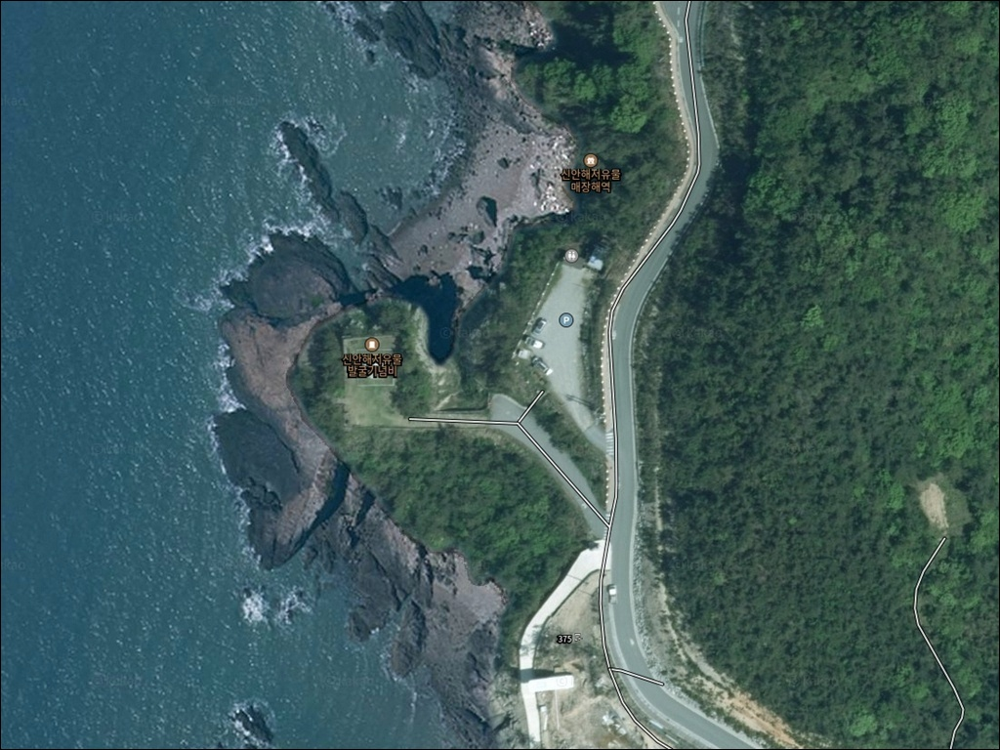
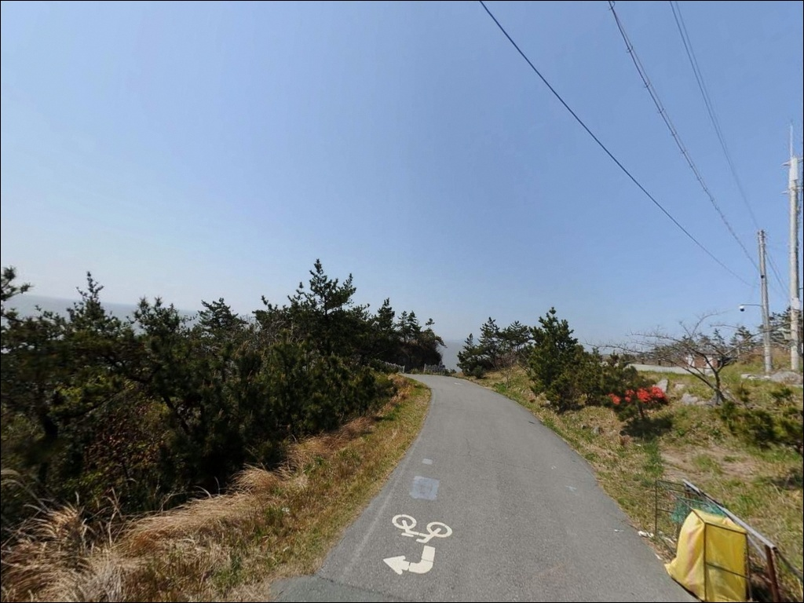
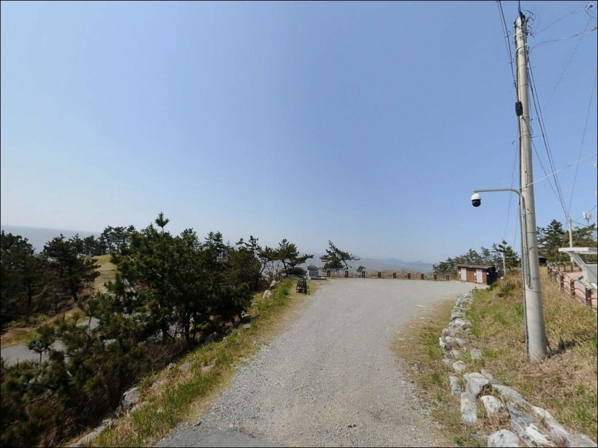
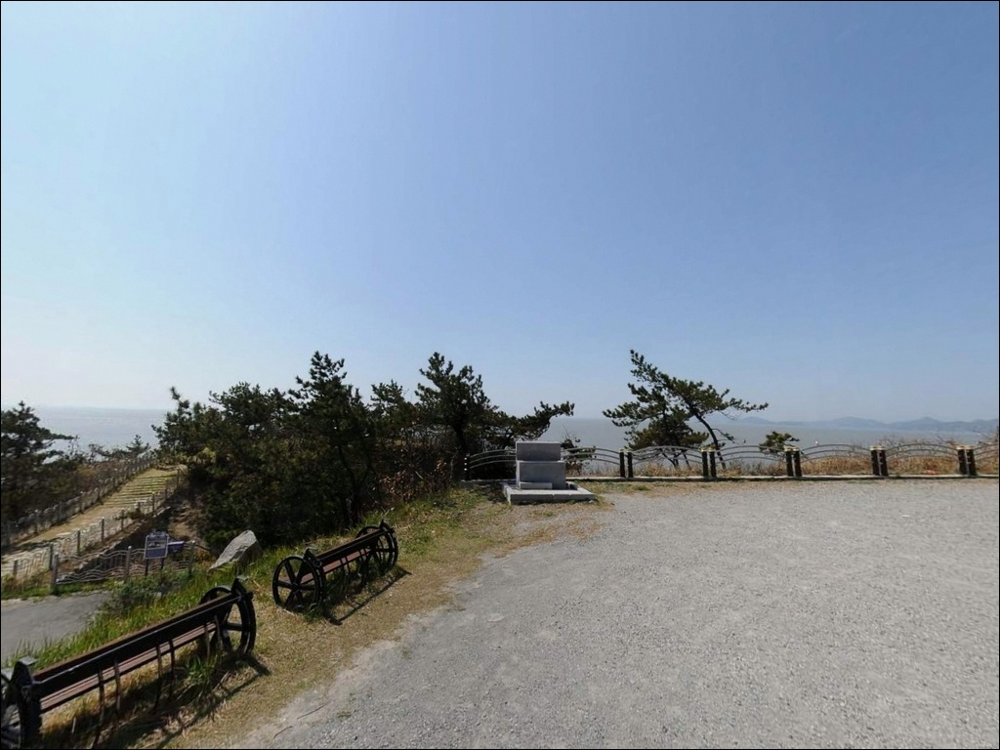
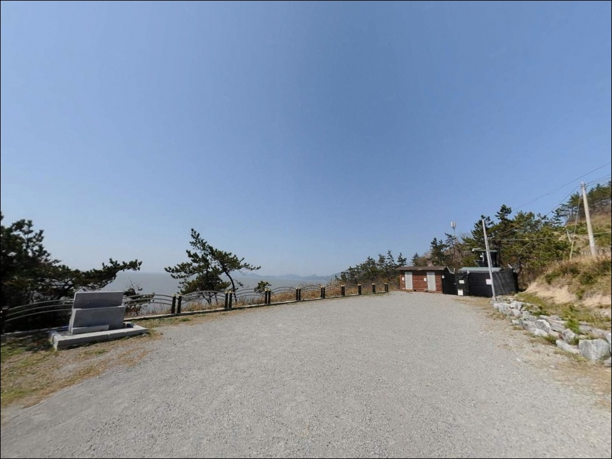
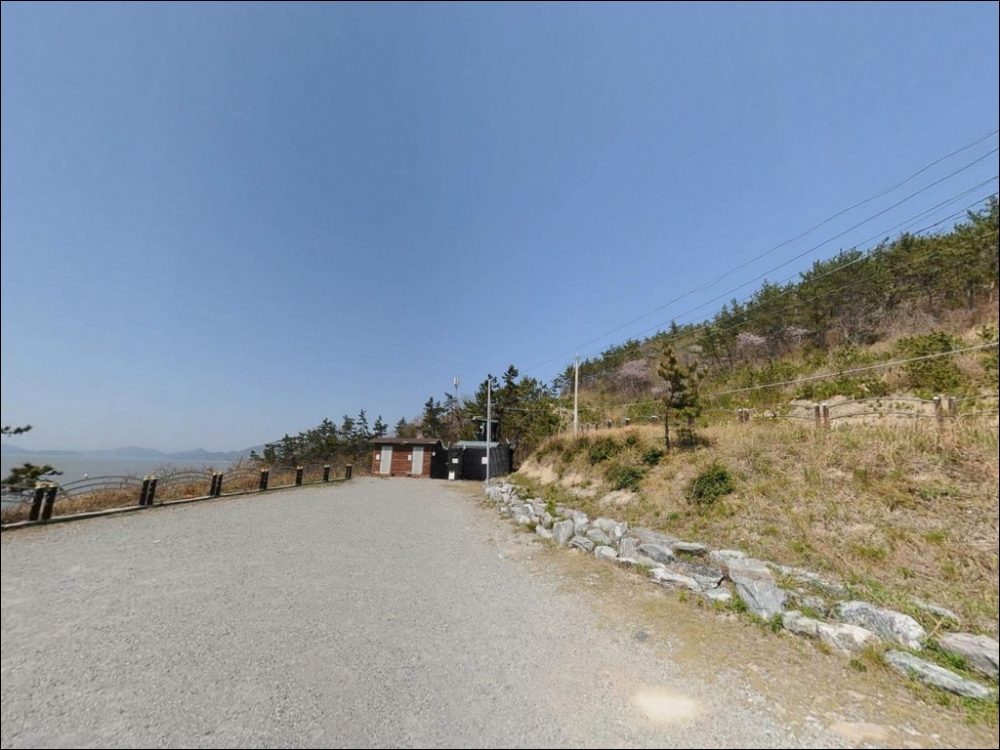
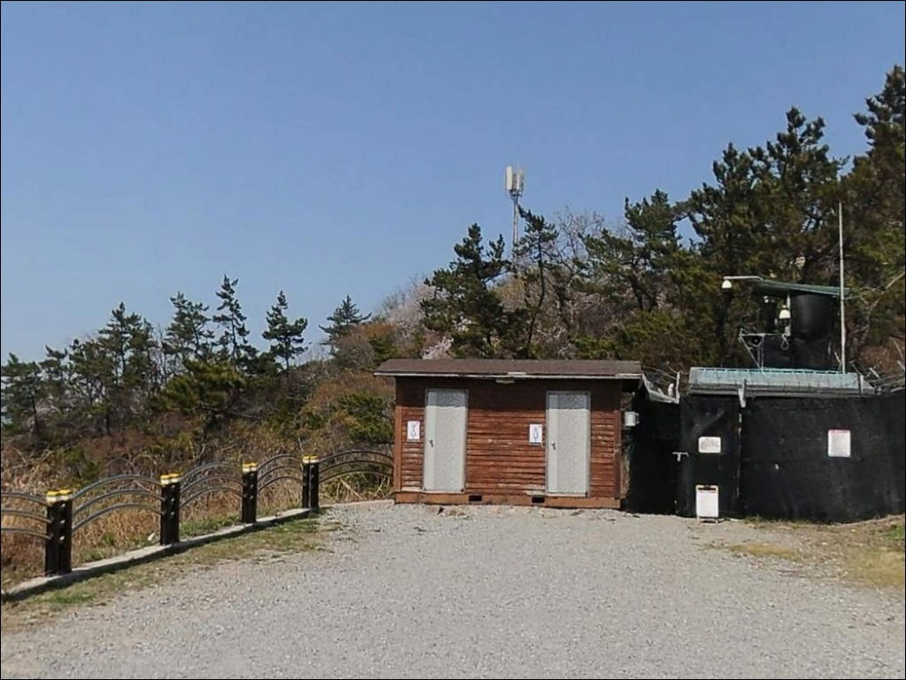
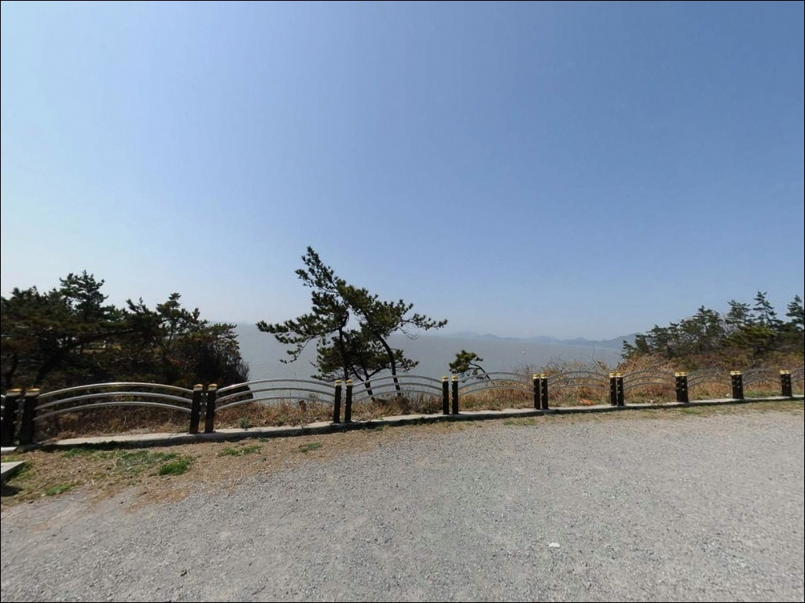
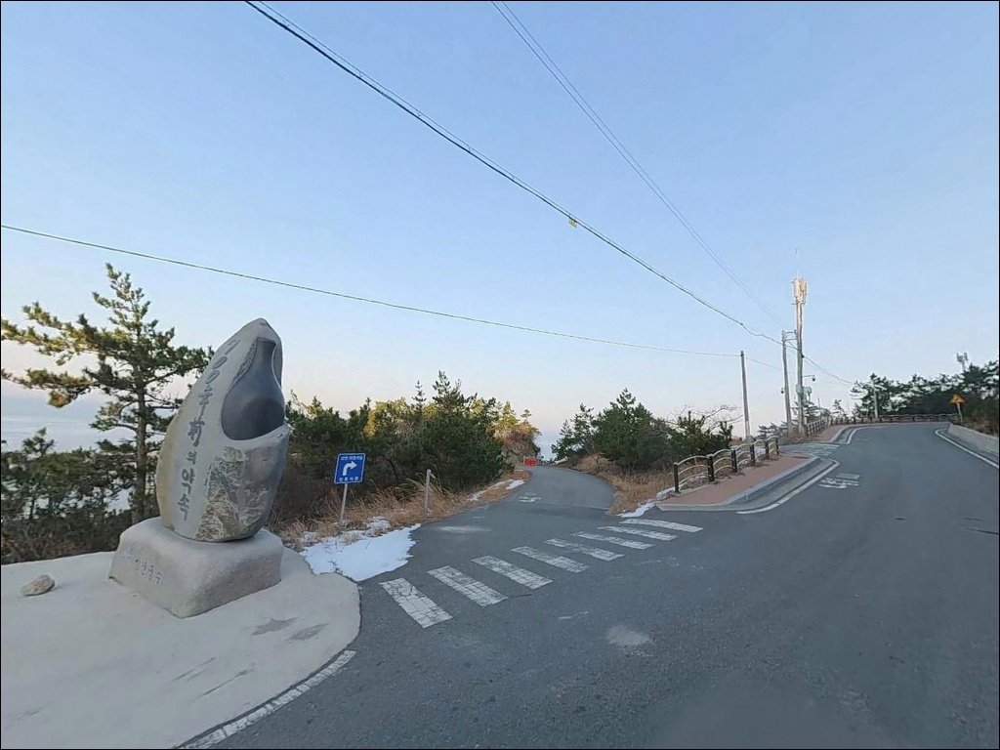

송원대유물매장해역주차장, 증도 전남 신안군 바다와 가장 가까이 머무는 차박, 낚시 해안 명소
이 페이지에는 광고(제휴 링크 포함)가 있으며, 광고 링크를 통해 구매하면 운영자가 판매 수익 또는 수수료를 받을 수 있습니다. 포인트 사진: 카카오맵 스카이뷰·로드뷰. 이 페이지의 지도·사진 이미지는 카카오맵의 실제 서비스 이미지와 다를 수 있습니다.


포인트 안내
송원대유물매장해역주차장
전남 신안군 증도면 방축리 318-4
물때 확인 없이 증도 방축리 갯바위에 진입하면
간조 시 수심이 내려가 채비가 바닥을 긁는 상황이
반복됩니다.
여기에 람사르습지·갯벌도립공원 복합 지정 해역이라는 조건까지 겹치면,
물때를 맞췄더라도 현장 안내판 확인 없이는
낚시 시작 여부 자체를 판단하기 어렵습니다.
이 글은 송원대유물매장해역주차장의 진입 환경,
지형 기반 낚시 여건, 보전지역 확인 포인트에 집중합니다.
조황 단정이나 어종 보장은 이 글의 범위에 포함되지 않습니다.

1. 진입 동선과 포인트 접근성
증도는 지도읍을 경유하는 육로로 연결되어 있어
차량 진입 자체에 별다른 장벽은 없습니다.
지도대교를 넘어 증도에 들어서면
섬 내부 포장도로를 따라 방축리 북서단까지
이어지는 구조이며,
승용차·SUV 기준으로
진입과 회차 모두 무난한 수준입니다.
주차장 주소 자체가 포인트명으로 사용될 만큼
공영주차장 형태의 공간이 존재합니다.
대형 차량도 회차가 가능한 규모로 조성되어 있으며,
인근 공터와 해안도로 확장 구간도
추가 주차 후보로 활용할 수 있습니다.
증도는 관광지 성격이 강한 섬이라
낮 시간에는 드라이브 코스로 차량 통행이 간간이 있는 분위기입니다.
야간이나 이른 새벽에는 통행이 줄어들어
정숙한 환경을 기대할 수 있는 구조입니다.

2. 차박 환경과 야간 체류 여건
방축리는 민가 밀집도가 낮은 해안 끝자락 구조입니다.
야간에는 차량 통행이 드물고
관광객 유동도 줄어들어
전체적으로 조용한 체류 환경을 기대할 수 있습니다.
다만 가로등 수가 충분하지 않은 환경이므로
개인 조명 장비는 출발 전 반드시 챙겨야 합니다.
반드시 짚어야 할 지형 요소가 하나 있습니다.
기념비 뒤편 구간은 급경사 낭떠러지 지형으로 이어지는 구조로,
야간 이동 시 이 구간은 접근을 삼가야 할 방향입니다.
조명이 확보된 상태에서도 각별한 주의가 필요합니다.
도덕도 방면 외항 쪽으로 열린 구조라
서풍·북서풍이 강한 날은 파도와 바람 영향을 직접 받습니다.
출발 전 기상 예보와 풍향을 확인하고
강풍 예보 시에는 체류 계획을 조정하는 것이
안전한 판단 기준입니다.


3. 주변 편의시설 및 인프라 현황
증도는 편의시설이 매우 제한적인 섬입니다.
방축리 반경 내에서 편의점이나
낚시 소품 구매 공간을 기대하기는 어렵습니다.
증도 방문 전 낚시 소품은 지도읍에서
사전 구비하는 것이 섬 내 공백 인프라를 대비하는
가장 현실적인 방법입니다.
식당과 소규모 마트는 증도면사무소 방면으로
이동하면 이용이 가능합니다.
태평염전 인근에도 구매 공간이 있으나
방축리에서는 차량 이동이 필요한 거리입니다.
미끼, 얼음, 식수, 연료 모두
입도 전에 충분히 준비해 들어가는 방식이 기본입니다.
응급 상황이 발생할 경우
신안군 전반의 의료시설은 목포 또는 압해읍 방면에 집중되어 있습니다.
증도 내 상시 의료시설 여부는 방문 전 확인이 필요하며,
비상약품과 비상 연락 수단을 반드시 갖추고 출발하는 편이 안전합니다.

4. 방문 전 반드시 챙겨야 할 준비사항
이 포인트에서 가장 먼저 확인해야 할 것은 물때입니다.
서해 특성상 조차가 크고
간조 시 갯바위 수심이 2m 이하로 내려가는 구조이므로
바다타임에서 방축리 기준 물때를 확인한 뒤
만조 전후 2시간 구간을 중심으로
입장 시각을 맞추는 것이 기본 전략입니다.
보전지역 현황도 방문 전 확인이 필요한 항목입니다.
증도는 갯벌도립공원·국가습지보호지역·람사르습지·유네스코 생물권보전지역을
복합 지정받은 구역으로,
구역별 낚시 가능 여부는 현장 안내판에서
직접 확인하는 것이 원칙입니다.
입장 후 안내판을 먼저 살피는 것이
불필요한 불이익을 막는 조건입니다.
갯벌과 암반이 혼재된 서해 갯바위 특성상
미끄럼 방지 신발은 필수입니다.
구명조끼, 헤드랜턴, 여분 채비도
이 포인트를 안전하게 운용하기 위한
기본 장비 구성입니다.

5. 지형이 만드는 낚시 조건 — 이 포인트를 결정짓는 요소
방축리 해안은 증도 북서단에서 도덕도 방향으로 열린 구조입니다.
방파제나 외항 구조 없이
자연 해안선과 갯바위가 그대로 이어지는 오픈형 포인트이며,
소단도 방향 갯바위 구간이
이 포인트의 주요 진입 발판입니다.
연안 수심은 완만하게 얕아지는 구조이며,
간조 시에는 2m 내외까지 내려갑니다.
외해 방향으로는 수심 15m 안팎의 구간이 형성되어 있어
채비를 멀리 던지면 수심 있는 구간을 노릴 수 있는 구조입니다.
다만 서해 특성상 강한 조류가 흐르는 구간이 있어
사리 전후에는 채비 컨트롤이 어려워집니다.
갯벌형 탁수가 유입되는 날은
시인성이 낮아지는 점도 함께 감안해야 합니다.
최신 조황은 출조 전에 반드시 따로 검색해 보시기 바랍니다.
"증도 방축리 낚시 조황" 또는 "신안 증도 서해낚시" 키워드가 유용합니다.


6. 포인트에 어울리는 낚시 스타일
이 포인트에서 가장 현실적인 스타일은 원투낚시입니다.
완만한 갯벌 수심 구조와 연안 바닥층 지형은
봉돌 채비를 멀리 던져 어종을 기다리는 방식에 잘 맞습니다.
만조 전후 수심이 충분히 확보된 타이밍에
채비를 외해 방향으로 최대한 멀리 보내는 운용이 기본입니다.
농어 루어낚시도 노려볼 수 있는 스타일입니다.
도덕도 방향으로 열린 조류 흐름 구간에서
물때가 맞는 날 루어를 활용해 탐색하는 방식이 어울립니다.
여름~초가을 활성도가 올라가는 시즌에
갯바위 끝단에서 루어 탐색을 병행하는 방식도 효율적입니다.
찌낚시는 탁수 유입이 잦고 수심 편차가 큰 날에는 운용이 어렵습니다.
물색이 맑고 수심이 일정하게 유지되는 날에 한해
연안 접근 어종을 노리는 보조 방식으로 활용할 수 있습니다.
원투·루어를 먼저 세팅하고
여건이 맞을 때만 병행하는 방식이 적합합니다.

7. 대안 포인트와 플랜 B 동선
방축리 갯바위에서 물때가 맞지 않거나
보전구역 제한으로 진입이 어려운 상황이라면,
증도 내 왕바위선착장 방면 해안이 첫 번째 대안입니다.
원투와 루어를 병행할 수 있는 구조로,
증도 내에서 낚시꾼들이 꾸준히 탐색하는
대안 포인트 중 하나입니다.
증도 서남쪽 방면에는 소형 방파제와 선착장이 분포해 있습니다.
방파제 발판이 더 편하고 야간 조명이 갖춰진 경우도 있어
야간 원투낚시 거점으로 활용하기 좋습니다.
방축리 포인트가 기대에 못 미칠 경우
서해랑길 증도 구간을 따라 탐색하는 동선이
효율적인 이동 경로입니다.
차박 중심으로 거점을 바꿀 경우에는
우전해수욕장 인근 해변 주차장이 대안이 됩니다.
해변 차박 후기가 다수 쌓인 곳으로
방축리 대비 인프라 접근성이 나은 편입니다.
낚시와 차박을 함께 운용하고 싶다면
이쪽을 기점으로 삼고
방축리를 보조 포인트로 탐색하는 전략도 현실적입니다.

준비를 갖춘 낚시꾼에게 어울리는
조용한 섬 끝자락 포인트입니다
원투낚시 위주의 서해 갯벌형 포인트를 조용하게 즐기는 낚시꾼이라면
이 포인트 구조는 잘 맞는 환경입니다.
방파제보다 한적하고 접근이 비교적 수월하며,
온라인 자료가 많지 않아 직접 발품을 팔아야 하는
탐색형 포인트이기도 합니다.
반면 편의시설 없는 환경에 익숙하지 않거나
물때 계산 없이 현장에 도착하는 방식이라면
이 포인트에서 만족스러운 결과를 기대하기 어렵습니다.
보전지역 현장 확인, 물때 계산, 자급 준비 — 이 세 가지를 갖추면
증도 북서단 끝자락의 한적한 갯바위에서
낚시와 차박을 함께 즐길 수 있는 조용한 출조가 됩니다.